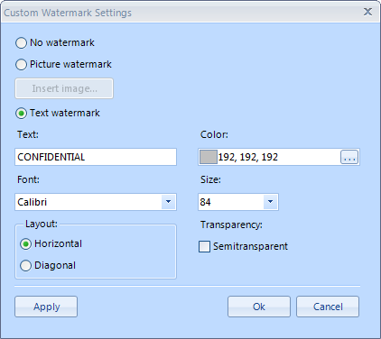

Watermark
Watermarks are text or pictures that appear behind document text. They often add interest or identify the document status. You can see watermarks
in Paged layout mode; they can be printed and exported to all rich-text formats, except HTML.
More on the specifics of the format providers you can find here.
Using UI
You ca easily insert bookmarks, for example you can use the RichTextEditor and choose from several predefined watermarks:

Alternatively, you can create your custom watermark from text or picture through the Insert custom watermark option.

Manipulating Watermarks Programatically
There are two types of watermarks - text and image. Both of them are shown behind the contents of the documents - text, images, tables, etc. and
are applied on a per document basis.
There is also a set of predefined textual watermarks - the most commonly used ones like ASAP, Urgent, Confidential, etc., that can be easily set
in the following way:
__[C#] __
this.radRichTextEditor1.SetWatermark(PredefinedWatermarkType.Confidential);
__[VB.NET] __
Me.radRichTextEditor1.SetWatermark(PredefinedWatermarkType.Confidential)
'#End Region
'#Region "settings"
Dim textSettings As New WatermarkTextSettings()
textSettings.Text = "Purple Watermark"
textSettings.RotateAngle = 30
textSettings.Opacity = 1
textSettings.ForegroundColor = Colors.Purple
Me.radRichTextEditor1.SetWatermarkText(textSettings)
'#End Region
Dim uri As New Uri("")
'#Region "image"
Dim imageSettings As New WatermarkImageSettings()
imageSettings.UriSource = uri
imageSettings.Size = New Size(500, 665)
Me.radRichTextEditor1.SetWatermarkImage(imageSettings)
'#End Region
End Sub
End Class
You can create custom watermarks using the WatermarkTextSettings and WatermarkImageSettings
classes and the respective methods of RadRichTextEditor - SetWatermarkText() and
SetWatermarkImage().
The following example demonstrates how to crate a text watermark and apply it to the document in the editor:
__[C#] __
WatermarkTextSettings textSettings = new WatermarkTextSettings();
textSettings.Text = "Purple Watermark";
textSettings.RotateAngle = 30;
textSettings.Opacity = 1;
textSettings.ForegroundColor = Colors.Purple;
this.radRichTextEditor1.SetWatermarkText(textSettings);
__[VB.NET] __
Dim textSettings As New WatermarkTextSettings()
textSettings.Text = "Purple Watermark"
textSettings.RotateAngle = 30
textSettings.Opacity = 1
textSettings.ForegroundColor = Colors.Purple
Me.radRichTextEditor1.SetWatermarkText(textSettings)
'#End Region
Dim uri As New Uri("")
'#Region "image"
Dim imageSettings As New WatermarkImageSettings()
imageSettings.UriSource = uri
imageSettings.Size = New Size(500, 665)
Me.radRichTextEditor1.SetWatermarkImage(imageSettings)
'#End Region
End Sub
End Class
And this is how you create an image watermark and apply it:
__[C#] __
WatermarkImageSettings imageSettings = new WatermarkImageSettings();
imageSettings.UriSource = uri;
imageSettings.Size = new Size(500, 665);
this.radRichTextEditor1.SetWatermarkImage(imageSettings);
__[VB.NET] __
Dim imageSettings As New WatermarkImageSettings()
imageSettings.UriSource = uri
imageSettings.Size = New Size(500, 665)
Me.radRichTextEditor1.SetWatermarkImage(imageSettings)
'#End Region
End Sub
End Class